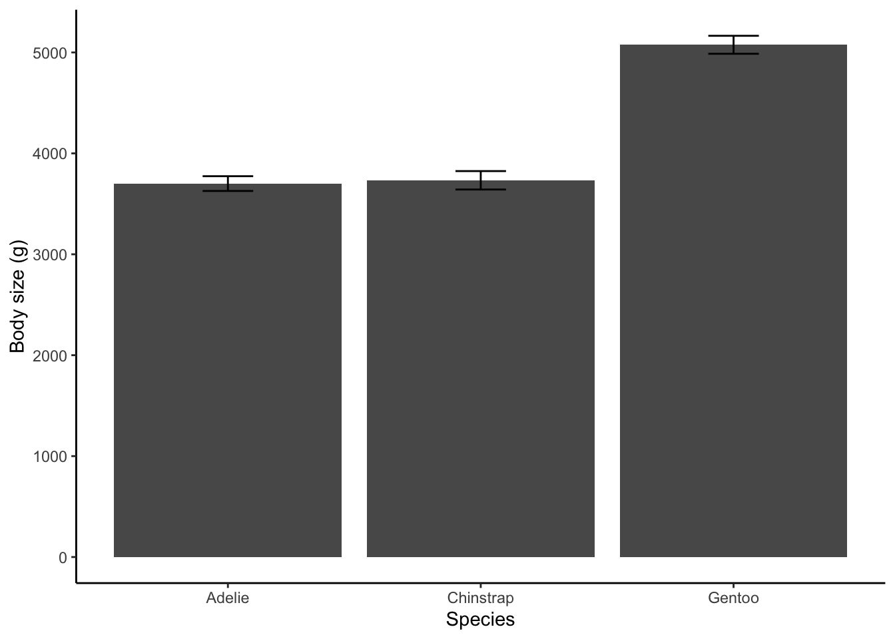
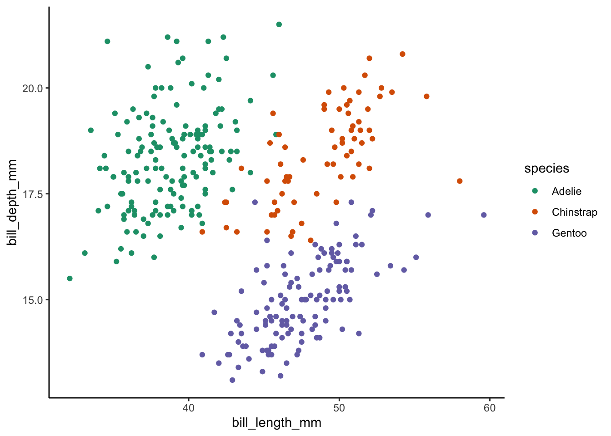
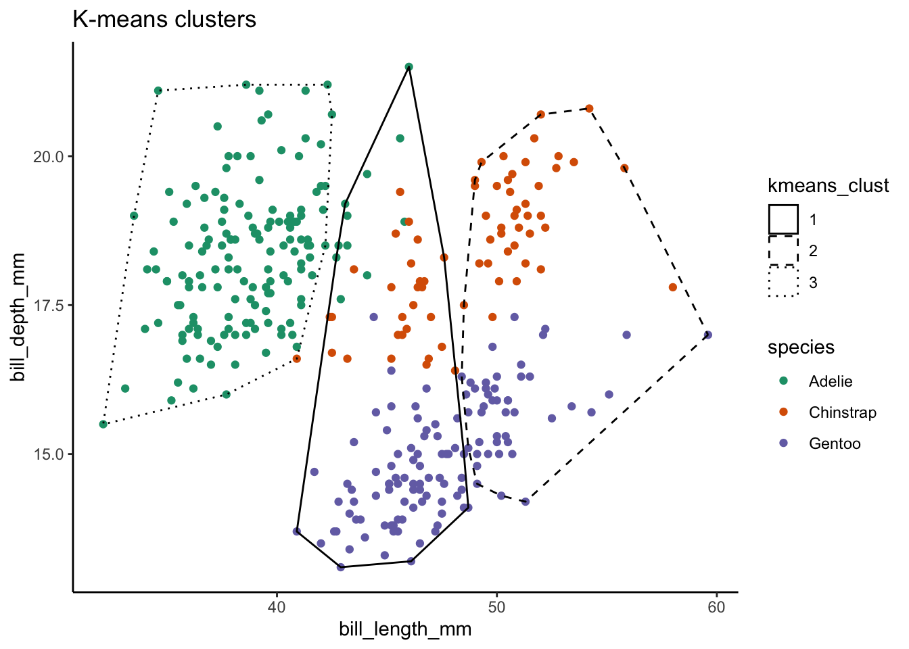
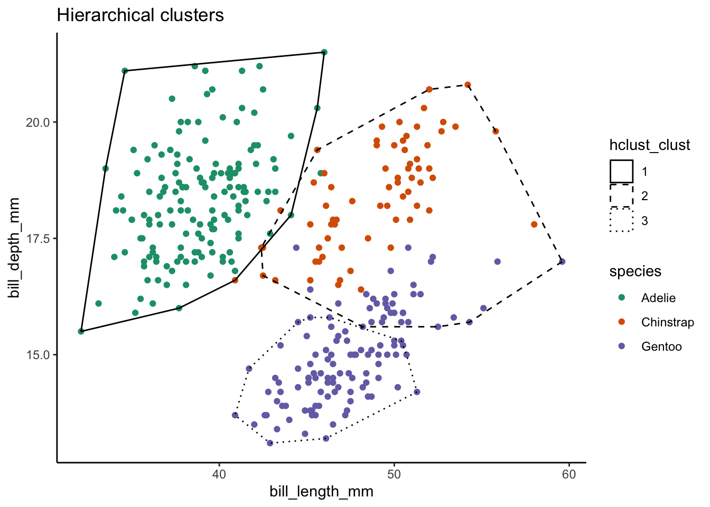

library(palmerpenguins)
library(tidyverse)Teaching Demo
Overview
Keep it introductory. Focus on the how, not the what.
| Programming concept | Assessment | Taxonomy | Pedagogy | |
|---|---|---|---|---|
| Lesson 1 | Functions | Parsons problem | Recognize | Cognitive load |
| Lesson 2 | Debugging | Code-tracing | Analyze | Productive failure |
Setup
Lesson 1
Programming concept: functions
Foundation for reusable, modular code and more advanced functional programming techniques.
Syntax and usage
For example, create a function se() to calculate the standard error of a vector.
\[ SE=\frac{\sigma}{\sqrt n} \]
# Create a function to calculate the standard error
se <- function(x) {
sd(x) / sqrt(length(x))
}The syntax for a function looks like this.
# Functions get assigned to variables, just like vectors
# Use the keyword 'function' and put your arguments in parentheses
add2 <- function(arg1, arg2) {
# Use the arguments to perform a task
# In this case, addition
result <- arg1 + arg2
# The last value in the function becomes the return value
# Here we return the result
result
}Now, use the se() function we created to get the standard error of body size by species and create a figure.
# Summarize body size by mean and standard error
size_summary <- penguins %>%
drop_na(species, body_mass_g) %>%
group_by(species) %>%
summarize(mean_mass = mean(body_mass_g),
# Here we use se()
se_mass = se(body_mass_g))
# Plot the mean size by species with error bars
ggplot(size_summary, aes(species, mean_mass)) +
geom_col() +
# The standard error becomes error bars
geom_errorbar(aes(ymin = mean_mass - 1.96 * se_mass,
ymax = mean_mass + 1.96 * se_mass),
width = 0.2) +
labs(x = "Species", y = "Body size (g)") +
theme_classic()
A larger example
Now a slightly longer function. We start with the observation that the penguin species’ bills are rather distinct. If we plot bill depth vs bill length, the three species form fairly distinct clusters.
ggplot(penguins, aes(bill_length_mm, bill_depth_mm, color = species)) +
geom_point() +
scale_color_brewer(palette = "Dark2") +
theme_classic()Warning: Removed 2 rows containing missing values (`geom_point()`).
Let’s see how well two different clustering algorithms distinguish between the three species. We’ll compare k-means to hierarchical clustering and write a function that assesses the accuracy of each.
set.seed(101)
# Prepare the data by selecting the species column and the bill morphology
# columns
penguins_bills <- penguins %>%
select(species, bill_length_mm, bill_depth_mm) %>%
drop_na()
# K-means clustering needs the morphology columns and the number of
# clusters (k)
penguins_kmeans <- select(penguins_bills, -species) %>%
kmeans(centers = 3)
# Hierarchical clustering needs the distances between points in the
# morphology columns (Canberra distance), a method for building the hierarchy
# (Ward's minimum variance), and a number of clusters to cut the tree into (k)
penguins_hclust <- select(penguins_bills, -species) %>%
dist(method = "canberra") %>%
hclust(method = "ward.D2") %>%
cutree(k = 3)
# Append the cluster assignments to the original data
penguins_clusters <- penguins_bills %>%
mutate(kmeans_clust = factor(penguins_kmeans$cluster),
hclust_clust = factor(penguins_hclust))
# Find the convex hull of each cluster
kmeans_chull <- penguins_clusters %>%
group_by(kmeans_clust) %>%
slice(chull(bill_length_mm, bill_depth_mm))
hclust_chull <- penguins_clusters %>%
group_by(hclust_clust) %>%
slice(chull(bill_length_mm, bill_depth_mm))
# How did they do?
ggplot(penguins_clusters,
aes(bill_length_mm, bill_depth_mm)) +
geom_point(aes(color = species)) +
geom_polygon(aes(linetype = kmeans_clust),
kmeans_chull,
fill = NA,
color = "black") +
scale_color_brewer(palette = "Dark2") +
scale_linetype_manual(values = c("solid", "dashed", "dotted")) +
labs(title = "K-means clusters") +
theme_classic()
ggplot(penguins_clusters,
aes(bill_length_mm, bill_depth_mm)) +
geom_point(aes(color = species)) +
geom_polygon(aes(linetype = hclust_clust),
hclust_chull,
fill = NA,
color = "black") +
scale_color_brewer(palette = "Dark2") +
scale_linetype_manual(values = c("solid", "dashed", "dotted")) +
labs(title = "Hierarchical clusters") +
theme_classic()
Which clustering algorithm do you think did a better job? Turn to someone next to you and share your answer. Did you agree? Why or why not?
Assessment
Use the F-1 score to quantify which algorithm performed best. The following code will associate each cluster number with it’s most common (modal) species. For example, in the hierarchical cluster results it would assign cluster 1 to Adelies. But the lines are shuffled out of order. Put them in the correct order to do two things: 1) define a function that assigns species to clusters and 2) adds species assignment columns to the penguins_clusters data frame for both clustering methods. Hint: although the lines are out of order, the indentation is correct.
species_count <- table(species[clusters == cl])
mutate(hclust_species = assign_species(species, hclust_clust),
penguins_clusters <- penguins_clusters %>%
assign_species <- function(species, clusters) {
kmeans_species = assign_species(species, kmeans_clust))
}
result <- character(length(species))
result
}
for (cl in unique(clusters)) {
result[clusters == cl] <- names(species_count)[which.max(species_count)]Now we assess clustering accuracy with the \(F_1\) score:
\[ F_1=\frac{TP}{TP + \frac{1}{2}(FP + FN)} \]
Where TP, FP, and FN are true positives, false positives, and false negatives. We calculate the \(F_1\) score within each class and get the overall \(F_1\) by averaging each class’s \(F_1\) by the fraction of the class in the sample.
Unshuffle the following code to make an \(F_1\) function and, for both K-means and hierarchical clustering, calculate \(F_1\) for each species. Take the weighted average of each species-level \(F_1\) (weighted by species frequency) to get the overall \(F_1\) for both K-means and hierarchical clustering.
fn <- sum(actual == a & assigned != a)
fp <- sum(actual != a & assigned == a)
penguins_clusters$kmeans_species)
class_f1 <- numeric(length(unique(actual)))
names(class_f1) <- unique(actual)
class_freq <- table(actual) / length(actual)
penguins_clusters$hclust_species)
}
f1 <- function(actual, assigned) {
sum(class_f1 * class_freq)
str_glue("K-means F1 = {round(kmeans_f1, 3)}, hierarchical clustering F1 = {round(hclust_f1, 3)}")
# for k-means...
kmeans_f1 <- f1(penguins_clusters$species,
hclust_f1 <- f1(penguins_clusters$species,
class_f1[a] <- tp / (tp + 1/2 * (fp + fn))
}
tp <- sum(actual == a & assigned == a)
# ...and for hierarchical clustering
for (a in unique(actual)) {Lesson 2
Programming concept: debugging
Critical skill, but rarely taught explicitly. Learn how to diagnose bugs with code-tracing.
Trace variables’ states as they change during a for-loop.
- Sketch out a table
- Put variables in the columns and loop iterations in rows
- Write down the starting values of each variable in the first row
- Read through the loop, updating variable values as you go
For example, the code trace for the following loop looks like the table below.
x <- 1:3
y <- 3:1
z <- numeric(length(x))
for (i in seq(length(x))) {
xi <- x[i]
yi <- y[i]
z[i] <- xi^2 + yi^2
}x = 1, 2, 3
y = 3, 2, 1
seq(length(x)) = 1, 2, 3
| Iteration | z | i | xi | yi |
|---|---|---|---|---|
| 0 | 0 0 0 | - | - | - |
| 1 | 10 0 0 | 1 | 1 | 3 |
| 2 | 10 8 0 | 2 | 2 | 2 |
| 3 | 10 8 10 | 3 | 3 | 1 |
Assessment
Run the following code. Describe the bug.
# Data describing two cities
cities <- tibble(
name = c("Santa Barbara", "Santa Cruz"),
pop_1000 = c(88, 62),
# Notice the list column!
major_roads = list(
c("Mission", "17", "9"),
c("Hollister", "217", "1")
)
)
# Format the contents of each row and print to console
for (i in seq(length(cities))) {
# Extract row
city <- cities[i, ]
# Format row
city_pretty <- str_glue(
"{city$name} has a population of {city$pop_1000},000. Major roads ",
"include {paste(city$major_roads[[1]], collapse = ', ')}."
)
# And print
print(city_pretty)
}Code trace the for-loop. Can you identify the source of the bug?